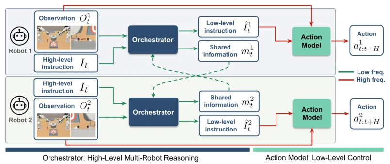
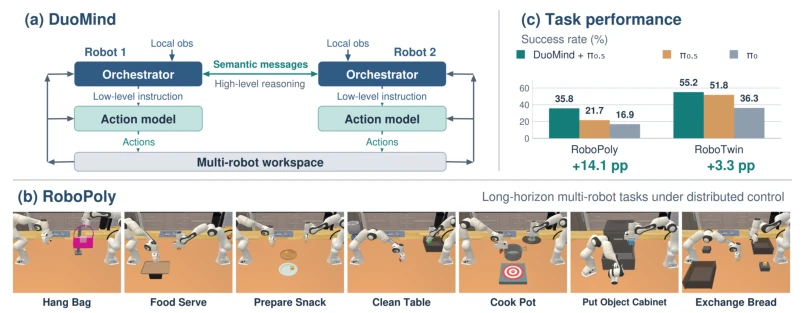
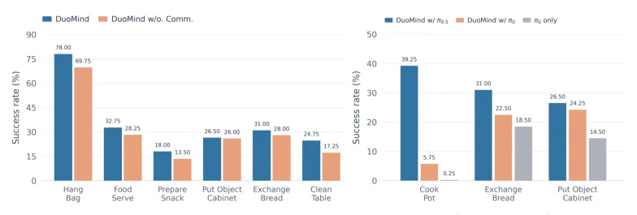
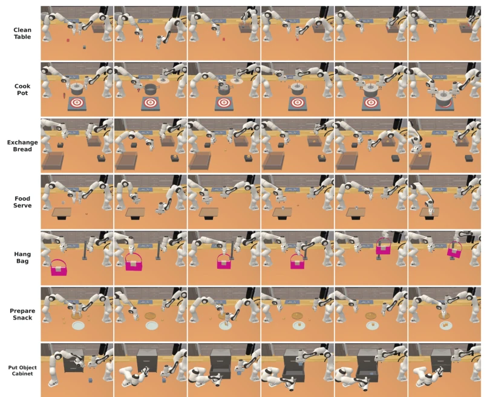
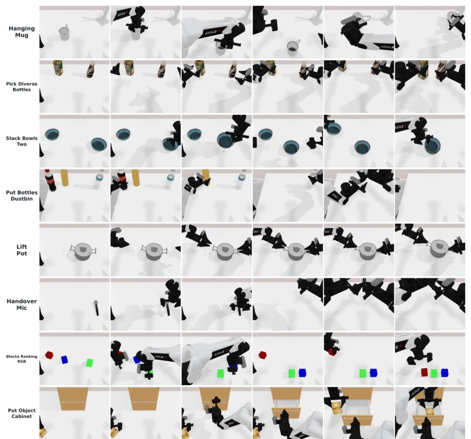
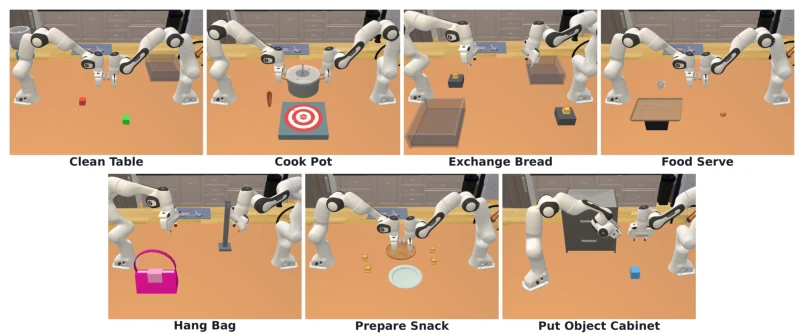
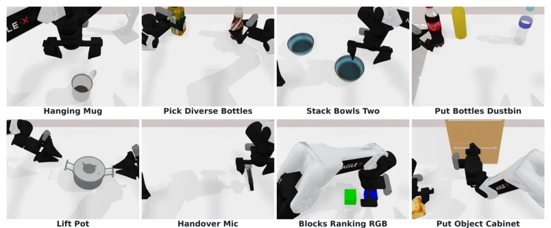
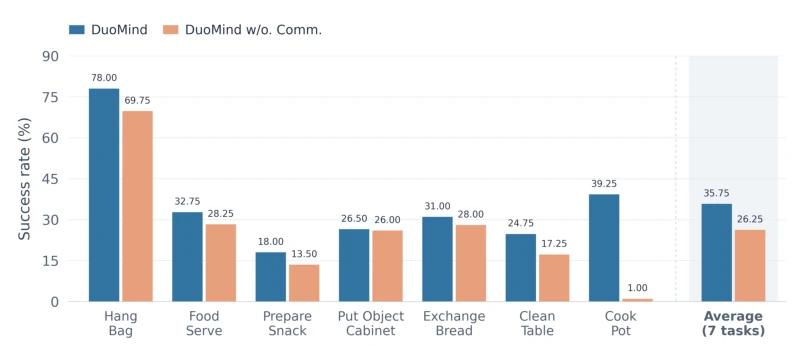
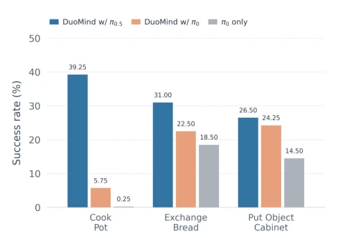

DuoMind attempts to use the 'combination punch' of VLM and VLA to solve the 'talking past each other' problem in multi-robot collaboration. The idea is beautiful, but reality is harsh. It decomposes complex distributed collaboration into 'brain' (VLM planning) and 'limbs' (VLA execution), attempting to use natural language as a universal interface, which is much more human-friendly than those 'black box' methods still using implicit vector communication. However, the paper's persistence on 'distributed' seems a bit too obsessed. After all, in simulation environments, two robots sharing a global view (except wrist cameras) is not actually true fully distributed. And experiments focus mainly on small-scale scenarios with two robots. For more complex group collaboration, whether this 'divide and conquer' strategy can withstand the severe impact of computational explosion and communication latency is currently doubtful. Additionally, relying on fine-tuning pre-trained models rather than end-to-end joint training, while lowering the threshold, may also limit the system's ultimate performance on specific tasks. Overall, this is a smart approach of 'building a house with ready-made blocks', but whether the house is built stably depends on whether the foundation (benchmark) is hard enough.
研究动机Motivation
当前具身智能领域，VLM 和 VLA 模型在单机器人任务上表现优异，但在多机器人协作场景下却显得力不从心。现有研究大多聚焦于单智能体（Zitkovich et al., 2023; Kim et al., 2024），或者虽然涉及多智能体，但往往局限于简单的环境、短视距任务，缺乏复杂的物理交互（Feng et al., 2026; Li et al., 2024）。更严重的是，现有的基于语言模型的多机器人系统通常只关注高层规划，底层控制仍依赖预定义的动作原语或规则，导致高层推理与底层执行之间存在巨大的鸿沟（Chen et al., 2024b; He et al., 2026）。此外，缺乏专门针对长视距、分布式控制下多机器人协作的基准测试，使得该领域的系统性评估无从下手。DuoMind 旨在填补这一空白，通过结合 VLM 的高层推理和 VLA 的底层执行，解决分布式环境下多机器人如何协调长视距行为并维持可靠执行的问题。
In the current field of embodied AI, VLM and VLA models perform excellently on single-robot tasks, but appear inadequate in multi-robot collaboration scenarios. Existing research mostly focuses on single agents (Zitkovich et al., 2023; Kim et al., 2024), or although involving multi-agents, often limited to simple environments, short-horizon tasks, lacking complex physical interactions (Feng et al., 2026; Li et al., 2024). More seriously, existing LLM-based multi-robot systems usually only focus on high-level planning, low-level control still relies on predefined action primitives or rules, leading to a huge gap between high-level reasoning and low-level execution (Chen et al., 2024b; He et al., 2026). Additionally, lack of benchmarks specifically for long-horizon, distributed control multi-robot collaboration makes systematic evaluation in this field impossible to start. DuoMind aims to fill this gap, by combining VLM's high-level reasoning and VLA's low-level execution, solving the problem of how multi-robots coordinate long-horizon behaviors and maintain reliable execution in distributed environments.
方法Method
DuoMind 提出了一种分布式的分层框架，核心在于将多机器人协作解耦为高层推理和底层执行两个阶段。每个机器人配备两个模块：VLM 作为“协调者（Orchestrator）”负责高层推理，VLA 作为“动作模型（Action Model）”负责底层控制。在规划步骤中，协调者接收任务指令、局部观测（全局相机 + 自身手腕相机）以及来自其他机器人的结构化语义消息。基于这些信息，协调者生成两路输出：一是发送给自身 VLA 的低层自然语言指令，二是发送给其他机器人的结构化消息。这种设计利用了 VLM 的语义理解能力和 VLA 的精确动作生成能力，实现了“慢思考、快执行”的解耦架构。关键创新在于结构化通信机制，消息包含四个字段：意图（Intention，即下一步子任务）、子目标（Subgoals，期望达到的状态）、任务信念（Belief of task，观测到的关键信息）以及信念的不确定性（Uncertainty of belief）。这种显式的语义通信有效缓解了分布式环境下的部分可观测性问题，使机器人能感知同伴意图并动态调整策略，而无需重新设计底层动作模型。
DuoMind proposes a distributed hierarchical framework, the core of which is decoupling multi-robot collaboration into two stages: high-level reasoning and low-level execution. Each robot is equipped with two modules: VLM as 'Orchestrator' responsible for high-level reasoning, VLA as 'Action Model' responsible for low-level control. In the planning step, the orchestrator receives task instructions, local observations (global camera + own wrist camera), and structured semantic messages from other robots. Based on this information, the orchestrator generates two outputs: one is low-level natural language instructions sent to its own VLA, the other is structured messages sent to other robots. This design utilizes VLM's semantic understanding capability and VLA's precise action generation capability, achieving a decoupled architecture of 'slow thinking, fast execution'. The key innovation lies in the structured communication mechanism, messages contain four fields: Intention (i.e., next subtask), Subgoals (expected state to reach), Belief of task (observed key information), and Uncertainty of belief. This explicit semantic communication effectively alleviates the partial observability problem in distributed environments, enabling robots to perceive partner intentions and dynamically adjust strategies, without redesigning the underlying action model.

Figure 2: In DuoMind, each robot operates with a VLM as its orchestrator for high-level reasoning and a VLA as its action model for low-level control. At each high-level planning step, the orches- trator at each robot reasons and generates both a low-level instruction for the action model and a structured message for other robots. The action model subsequently follows the low-level instruc- tion and produces fine-grained actions.
实验Experiments
作者在 RoboPoly（7个长视距多机器人任务）和 RoboTwin（8个双臂协作任务，被改造为分布式双机器人设置）上进行了评估。基线包括仅使用 VLA（π0.5）和仅使用 VLM（π0）的方法。结果显示，DuoMind 在大多数任务上优于基线，特别是在 RoboPoly 这种长视距、高协调难度的任务中，提升更为显著（如 Hang Bag 任务成功率从 52.25% 提升至 78.00%）。消融实验表明，移除智能体间的通信会导致冲突增加、性能下降，证明了显式语义通信的重要性；同时，更换不同的动作模型（如 π0）虽然整体性能有所波动，但 DuoMind 的分层架构仍能显著提升其表现，验证了框架的通用性。
The authors conducted evaluation on RoboPoly (7 long-horizon multi-robot tasks) and RoboTwin (8 two-arm collaboration tasks, modified to distributed dual-robot settings). Baselines include methods using only VLA (π0.5) and only VLM (π0). Results show that DuoMind outperforms baselines on most tasks, especially in RoboPoly such long-horizon, high-coordination-difficulty tasks, where improvements are more significant (e.g., Hang Bag task success rate increased from 52.25% to 78.00%). Ablation experiments show that removing communication between agents leads to increased conflicts and performance drop, proving the importance of explicit semantic communication. Meanwhile, changing different action models (such as π0) although overall performance fluctuates, DuoMind's hierarchical architecture can still significantly improve their performance, verifying the framework's generality.

Figure 1: (a) An illustration of DuoMind, a distributed framework combining an orchestrator and action model for multi-robot coordination. (b) RoboPoly is a benchmark we develop for long- horizon coordination under distributed robot control. (c) DuoMind consistently outperforms the baselines across both benchmarks.

Figure 4: Ablation studies of DuoMind. (a) Success rates when inter-agent communication is dis- abled. (b) Success rates with different action models.

Figure 9: We evaluate DuoMind on 7 RoboPoly tasks.

Figure 10: We evaluate DuoMind on 8 selected RoboTwin tasks.
其他图片Other Figures

Figure 5: The task overview of RoboPoly.

Figure 6: The task overview of selected RoboTwin tasks.

Figure 7: The result of ablation study that disable the inter-agent communication in DuoMind.

Figure 8: Results of the ablation study using different action models in DuoMind.